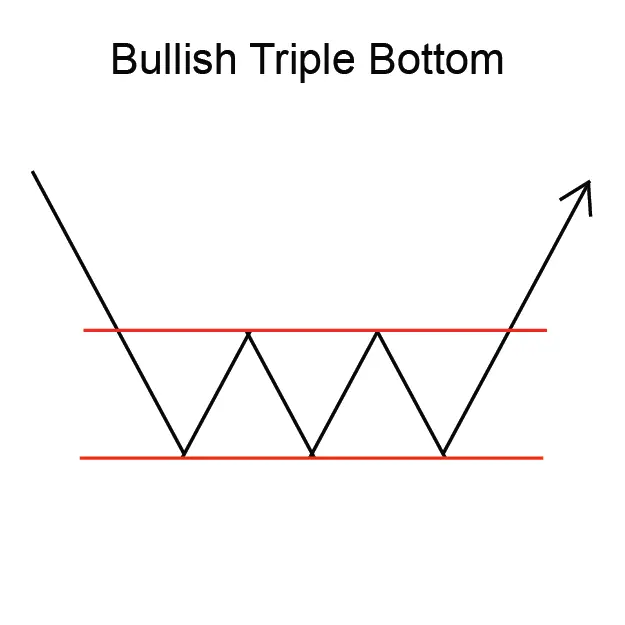
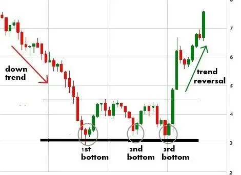

"ट्रिपल बॉटम पैटर्न" एक उलटा चार्ट पैटर्न है जिसे तीन समानरूपी निचले गठनों द्वारा डिफाइन किया जाता है, जो एक प्रतिरोध स्तर से संबद्ध है।
तीसरा निचला भाग पहले और दूसरे निचले भाग से अधिक होना चाहिए।
ट्रिपल बॉटम पैटर्न एक संभावित उछाल का संकेत देता है और ट्रेडर्स इसे व्यापार के अवसर के रूप में उपयोग करते हैं।
पैटर्न में प्रवेश करने के लिए, ट्रेडर्स आमतौर पर तीसरे सबसे कम मूल्य के ऊपर 'ब्रेकउट' की खोज करते हैं।
ट्रिपल बॉटम पैटर्न एक विश्वसनीय रीवर्सल पैटर्न नहीं है, लेकिन यह एक संभावित उछाल का संकेत देता है
और ट्रेडर्स इसे व्यापार के अवसर के रूप में उपयोग करते हैं।
